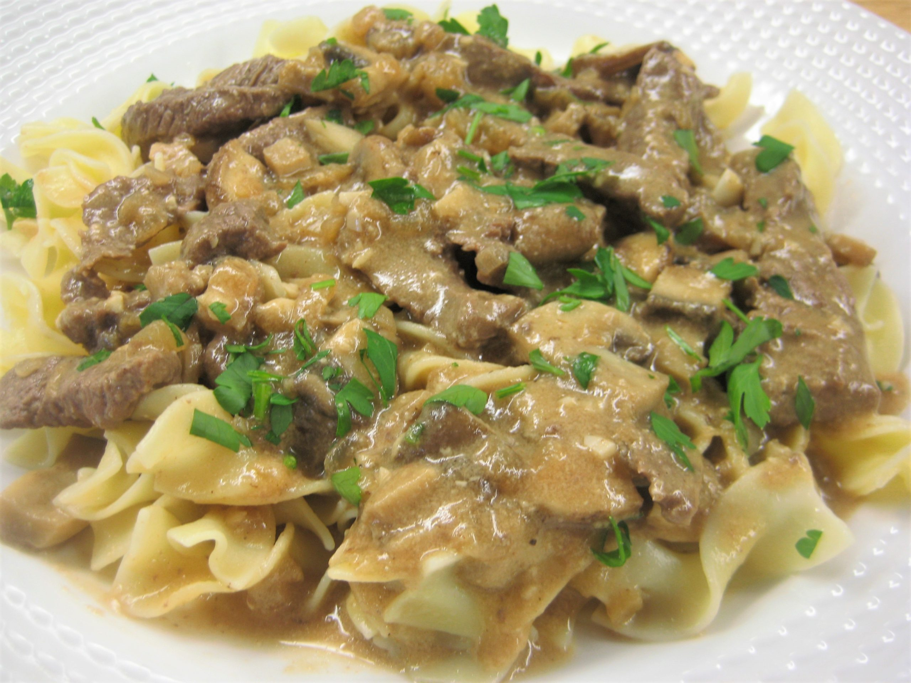

Beef Stroganoff

Saucy Beef Stroganoff
A delicious sausage gravy recipe that goes great on biscuits, potatoes, eggs, toast, or anything else.
You'll be the talk of the town with this amazing recipe.
Ingredients
- 2 lbs. sliced steak
- 1 1/2 cubes butter
- 3 tablespoons white flour
- Garlic powder
- Paprika
- Beef bouillon
- 1 chopped onion
- 1 chopped bell pepper
- 1 lb. sliced mushrooms
- 1 package extra-wide egg noodles
- Sour cream
- 3 cups water
Steps
- Boil the package of noodles until tender.
- Drain noodles, stir in half-stick of butter.
- Sprinkle noodles with paprika and set aside.
- In a large deep frying pan, melt a half-stick butter on medium heat.
- Add the onions, bell pepper, and mushrooms, and sautee until onions are caramelized.
- Add the steak and cook until steak is brown.
- Reduce heat to medium low, add one cup water and continue cooking for ten minutes.
- in a separate frying pan melt the remaining half-stick of butter, and stir in the white flour to create a rue.
- Add the rue to the onions, bell pepper, mushrooms, and steak.
- Slowly stir in the remaining two cups of water into the rue.
- Stir in one teaspoon garlic powder.
- Add in beef bouillon until the mixture tastes slightly too salty.
- Continue cooking and stirring the sauce until it reduces down and becomes thick
- Add a few teaspoons of sour cream until the sauce tastes slightly sour and salty.
- Remove from heat.
- Pile noodles on plate and smother with sauce.
- Enjoy!